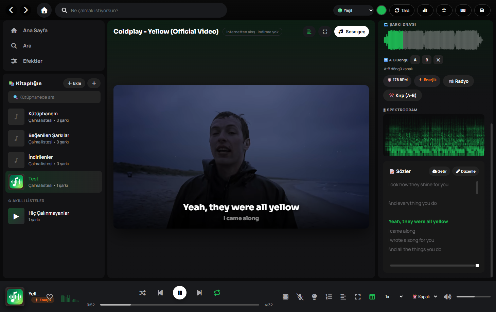
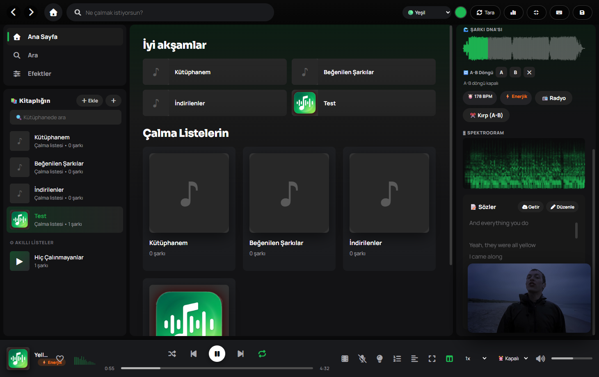

🎛
Gerçek DSP ses motoru
30 hazır EQ preset, 10 bant özel EQ ve efektler — Bass, Echo, Reverb, 8D — hepsi çalarken anında uygulanır.
Spotify tarzı arayüz, gerçek DSP ses motoru ve internetten klip akışı — hepsi tek bir yerli uygulamada. Sunucu yok, port yok, abonelik yok.
Ses tarayıcıda değil, tamamen yerli bir DSP motorunda işlenir. Her şey uygulamanın içinde çalışır.
30 hazır EQ preset, 10 bant özel EQ ve efektler — Bass, Echo, Reverb, 8D — hepsi çalarken anında uygulanır.
Çalan parçanın klibini internetten oynatır — akış, indirme yok. Ekranı kaplamaz, ana alana gömülür.
Sekme değiştirince klip köşeye iner ve çalmaya devam eder; akış bir an bile kesilmez.
Zaman kodlu (LRC) sözler çalarken satır satır vurgulanır, klibin üstünde de akar.
Demucs ile vokal ve enstrümanlar gerçekten ayrılır (yalnızca CPU): enstrümantal karaoke ya da akapella. Ayrılan stem'ler önbelleğe alınır, sonrası anında.
Ayrı kurulum gerekmez; ara, kapaklarıyla gör — satıra tıkla anında insin, ya da seçip toplu indir.
Her şey in-process çalışır. QtWebEngine yalnızca görsel içindir; ses tamamen yerlidir.
Yeni sürüm çıkınca arka planda indirir, kapanışta kurup uygulamayı yeniden başlatır.
Tanıdık, sade bir arayüz — arkasında ise ciddi bir ses ve klip altyapısı.
Çalan parçanın resmî klibi ana alana gömülür; zaman kodlu sözler satır satır vurgulanarak videonun üzerinde ilerler. Sağda Şarkı DNA'sı, BPM ve spektrogram.
Klip modu — sözler klibin üstünde senkron akar.
Ana sayfaya ya da başka bir listeye geçtiğinde klip küçülüp köşeye yerleşir. Çalma listelerin, kütüphanen ve akıllı listelerin bir tık uzağında; müzik hiç durmaz.
Kalıcı mini oynatıcı — gezinsen de klip çalmaya devam eder.
Denenmiş, açık kaynak araçlardan oluşan sağlam bir yığın — tek bir .msi paketinde.
Arayüz PyQt6 + QtWebEngine ile çizilir, ses işleme NumPy/SciPy ve sounddevice üzerinde yerli olarak yürütülür. Klip ve indirme akışı gömülü yt-dlp + FFmpeg ile sağlanır — dışarıda bir sunucu ya da açık port olmadan.
İndir, çalıştır, çal. Kurulum bir dakika, deneyim kalıcı.
Windows 10/11 · ücretsiz · açık kaynak